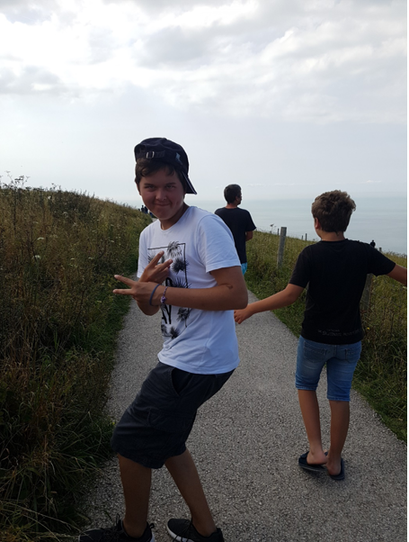
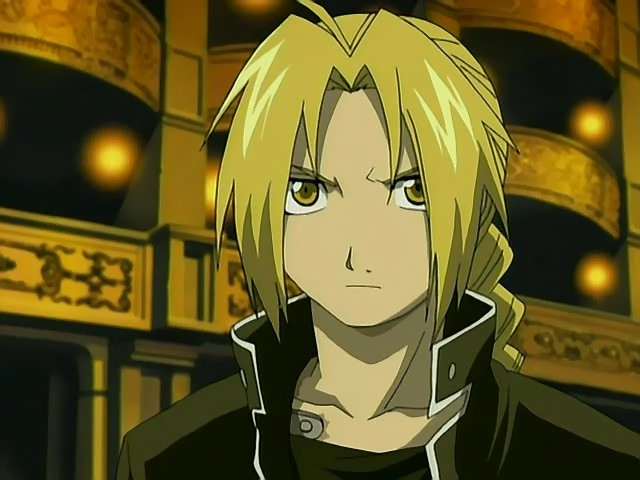

Dev: Richard Alexandre
Contact: alexbad62400@gmail.com
Description : Je suis en première année de Dut Informatique à Lens .
Ce projet m’a confirmé une chose, le développement web n’est pas pour moi.
Malgré mes bases en HTML et CSS que j’ai acquis avec mon BAC STI2D,
je n’arrive vraiment pas à développer correctement, je n’aime tout simplement pas cela.
Je suis tout de même intéressé sur les solutions techniques comme notamment utiliser « Pure.css » pour la responsivité.
J’ai bien aimé travailler en groupe avec mon camarade de l’année dernière que j’apprécie

Dev: Champenois Elric
Contact: blackangel59252@gmail.com
Description : Personne en Première année de DUT .
La création du site fût amusante à faire et remplie de découverte (découverte de Pure)
De plus le codage fût fort plaisant avec mon camarade qui m'a fait découvrir Pure.